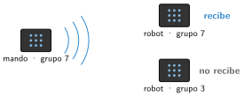

Radio y Bluetooth con Micro:Bit
🤔 Pienso5 min
Qué hago aquí: Piensa un momento y contesta con lo que ya sabes. No pasa nada si no lo sabes: es para empezar.
Un walkie-talkie y unos auriculares sin cable envían sonido por el aire. ¿En qué se parecen? ¿En qué se diferencian?
📖 Leo y aprendo15 min
Qué hago aquí: Lee despacio, mira los dibujos y los ejemplos, y quédate con la idea clave del final.
Las ondas de radio viajan por el aire. Atraviesan las paredes, al revés que los infrarrojos. La Micro:Bit tiene una radio .

El Bluetooth también usa ondas de radio. Pero une solo dos aparatos, que antes se han emparejado. Por ejemplo, el móvil y unos auriculares. Llega a unos 10 metros.
✏️ Hago25 min
Qué hago aquí: Haz las actividades en orden. Empieza siempre por las básicas.
Elegid un grupo de radio para vuestra pareja. Escribidlo aquí:
Programad una placa que envíe un número al pulsar A. Programad otra que lo muestre al recibirlo. ¿Funciona? Sí No
Alejaos con las placas. ¿Hasta dónde llega el mensaje? ¿Pasa a través de una pared?
Completa la tabla.
| Infrarrojos | Radio | Bluetooth | |
|---|---|---|---|
| ¿Atraviesa paredes? | |||
| Un ejemplo |
Ampliad el mando: A envía 1 (avanzar), B envía 2 (girar) y A+B envía 0 (parar). Programad el robot para que haga cada cosa.
🚀 Amplío (si quieres saber más)
Qué hago aquí: ¿Has terminado? Lee la curiosidad o elige el reto. Es voluntario.
Haz un mando que funcione inclinando la placa. Usa el acelerómetro: envía un número distinto para cada lado.
✅ Compruebo5 min
Qué hago aquí: Contesta sin mirar la ficha y marca cómo lo llevas.